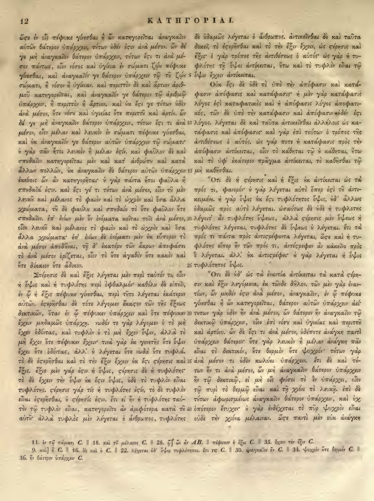

12a
| 1 | ὥστε ἐν οἷς πέφυκε <choice resp="#MinioPaluelloL1949"><sic>γίνεσθαι</sic><corr>γίγνεσθαι</corr></choice> ἢ ὧν κατηγορεῖται ἀναγκαῖον | 0.95 |
|---|---|---|
| 2 | αὐτῶν θάτερον ὑπάρχειν, τούτων οὐδέν ἐστιν ἀνὰ μέσον. ὧν δέ | 0.95 |
| 3 | γε μὴ ἀναγκαῖον θάτερον ὑπάρχειν, τούτων ἔστι τι ἀνὰ μέ- | 0.95 |
| 4 | σον πάντως, οἷον νόσος καὶ ὑγίεια ἐν σώματι ζῴου πέφυκε | 0.95 |
| 5 | <choice resp="#MinioPaluelloL1949"><sic>γίνεσθαι</sic><corr>γίγνεσθαι</corr></choice>, καὶ ἀναγκαῖόν γε θάτερον ὑπάρχειν τῷ τοῦ ζῴου | 0.95 |
| 6 | σώματι, ἢ νόσον ἢ ὑγίειαν. καὶ περιττὸν δὲ καὶ ἄρτιον ἀριθ- | 0.95 |
| 7 | μοῦ κατηγορεῖται, καὶ ἀναγκαῖόν γε θάτερον τῷ ἀριθμῷ | 0.95 |
| 8 | ὑπάρχειν, ἢ περιττὸν ἢ ἄρτιον. καὶ οὐκ ἔστι γε τούτων οὐδὲν | 0.95 |
| 9 | ἀνὰ μέσον, οὔτε νόσου καὶ ὑγιείας οὔτε περιττοῦ καὶ ἀρτίου. ὧν | 0.95 |
| 10 | δέ γε μὴ ἀναγκαῖον θάτερον ὑπάρχειν, τούτων ἔστι τι ἀνὰ | 0.95 |
| 11 | μέσον, οἷον μέλαν καὶ λευκὸν ἐν σώματι πέφυκε <choice resp="#MinioPaluelloL1949"><sic>γίνεσθαι</sic><corr>γίγνεσθαι</corr></choice>, | 0.95 |
| 12 | καὶ οὐκ ἀναγκαῖόν γε θάτερον αὐτῶν ὑπάρχειν τῷ σώματι· | 0.95 |
| 13 | οὐ γὰρ πᾶν ἤτοι λευκὸν ἢ μέλαν ἐστίν. καὶ φαῦλον δὲ καὶ | 0.95 |
| 14 | σπουδαῖον κατηγορεῖται μὲν καὶ κατ’ ἀνθρώπου καὶ κατὰ | 0.95 |
| 15 | ἄλλων πολλῶν, οὐκ ἀναγκαῖον δὲ θάτερον αὐτῶν ὑπάρχειν | 0.95 |
| 16 | ἐκείνοις ὧν ἂν κατηγορῆται· οὐ γὰρ πάντα ἤτοι φαῦλά ἢ | 0.95 |
| 17 | σπουδαῖά ἐστιν. καὶ ἔστι γέ τι τούτων ἀνὰ μέσον, οἷον τοῦ μὲν | 0.95 |
| 18 | λευκοῦ καὶ μέλανος τὸ φαιὸν καὶ τὸ ὠχρὸν καὶ ὅσα ἄλλα | 0.95 |
| 19 | χρώματα, τοῦ δὲ φαύλου καὶ σπουδαίου τὸ ὥστε φαῦλον ὥστε | 0.95 |
| 20 | σπουδαῖον. ἐπ’ ἐνίων μὲν <choice resp="#MinioPaluelloL1949"><sic>ἐν</sic><corr>οὖν</corr></choice> ὀνόματα κεῖται τοῖς ἀνὰ μέσον, | 0.95 |
| 21 | οἷον λευκοῦ καὶ μέλανος τὸ φαιὸν καὶ τὸ ὠχρὸν καὶ ὅσα | 0.95 |
| 22 | ἄλλα χρώματα· ἐπ’ ἐνίων δὲ ὀνόματι μὲν οὐκ εὔπορον τὸ | 0.95 |
| 23 | ἀνὰ μέσον ἀποδοῦναι, τῇ δ’ <choice resp="#MinioPaluelloL1949"><sic>ἑκατέρῳ</sic><corr>ἑκατέρου</corr></choice> τῶν ἄκρων ἀποφάσει | 0.95 |
| 24 | τὸ ἀνὰ μέσον ὁρίζεται, οἷον τὸ <choice resp="#MinioPaluelloL1949"><sic>ὥστε</sic><corr>οὔτε</corr></choice> ἀγαθὸν ὥστε κακὸν καὶ | 0.95 |
| 25 | ὥστε δίκαιον <choice resp="#MinioPaluelloL1949"><sic>ὥστε</sic><corr>οὔτε</corr></choice> ἄδικον. | 0.95 |
| 26 | Στέρησις δὲ καὶ ἕξις λέγεται μὲν περὶ ταὐτόν τι, οἷον | 0.95 |
| 27 | ἡ ὄψις καὶ ἡ τυφλότης περὶ ὀφθαλμόν· καθόλου δὲ εἰπεῖν, | 0.95 |
| 28 | ἐν ᾧ ἡ ἕξις πέφυκε γίνεσθαι, περὶ τοῦτο λέγεται ἑκάτερον | 0.95 |
| 29 | αὐτῶν. ἐστερῆσθαι δὲ τότε λέγομεν ἕκαστον τῶν τῆς ἕξεως | 0.95 |
| 30 | δεκτικῶν, ὅταν ἐν ᾧ πέφυκεν ὑπάρχειν καὶ ὅτε πέφυκεν | 0.95 |
| 31 | ἔχειν μηδαμῶς ὑπάρχῃ. νωδὸν τε γὰρ λέγομεν τὸ μὴ | 0.95 |
| 32 | ἔχον ὀδόντας, καὶ τυφλὸν τὸ μὴ ἔχον ὄψιν, ἀλλὰ τὸ | 0.95 |
| 33 | μὴ ἔχον ὅτε πέφυκεν ἔχειν· τινὰ γὰρ ἐκ γενετῆς <choice resp="#MinioPaluelloL1949"><sic>ὥτε</sic><corr>οὔτε</corr></choice> ὄψιν | 0.95 |
| 34 | ἔχει ὥτε ὀδόντας, ἀλλ’ οὐ λέγεται ὥτε νωδὰ <choice resp="#MinioPaluelloL1949"><sic>ὥτε</sic><corr>οὐδὲ</corr></choice> τυφλά. | 0.95 |
| 35 | τὸ δὲ ἐστερῆσθαι καὶ τὸ τὴν ἕξιν ἔχειν οὐκ ἔστι στέρησις καὶ | 0.95 |
| 36 | ἕξις. ἕξις μὲν γάρ ἐστιν ἡ ὄψις, στέρησις δὲ ἡ τυφλότης· | 0.95 |
| 37 | τὸ δὲ ἔχειν τὴν ὄψιν οὐκ ἔστιν ὄψις, οὐδὲ τὸ τυφλὸν εἶναι | 0.95 |
| 38 | τυφλότης. στέρησις γάρ τίς ἡ τυφλότης ἐστίν, τὸ δὲ τυφλὸν | 0.95 |
| 39 | εἶναι ἐστερῆσθαι, οὐ στέρησίς ἐστιν. ἔτι εἰ ἦν ἡ τυφλότης ταὐ- | 0.95 |
| 40 | τὸν τῷ τυφλὸν εἶναι, κατηγορεῖτο ἂν ἀμφότερα κατὰ τοῦ | 0.95 |
| 41 | αὐτοῦ. ἀλλὰ τυφλὸς μὲν λέγεται ὁ ἄνθρωπος, τυφλότης | 0.95 |
12b
| 1 | ον δὲ οὐδαμῶς λέγεται ὁ ἄνθρωπος. ἀντικεῖσθαι δὲ καὶ ταῦτα | 0.95 |
|---|---|---|
| 2 | δοκεῖ, τὸ <choice resp="#hathiTrustOCR"><sic>ἐςερῆσθαι</sic><corr>ἐστερῆσθαι</corr></choice> καὶ τὸ τὴν ἕξιν ἔχειν, ὡς <choice resp="#hathiTrustOCR"><sic>ςέρησις</sic><corr>στέρησις</corr></choice> καὶ | 0.95 |
| 3 | ἕξις· ὁ γὰρ τρόπος τῆς ἀντιθέσεως ὁ αὐτός· ὡς γὰρ ἡ τυ- | 0.95 |
| 4 | φλότης τῇ ὄψει ἀντίκειται, οὕτω καὶ τὸ τυφλὸν εἶναι τῷ | 0.95 |
| 5 | ὄψιν ἔχειν ἀντίκειται. | 0.95 |
| 6 | Οὐκ ἔστι δὲ οὐδὲ τὸ ὑπὸ τὴν ἀπόφασιν καὶ κατα- | 0.95 |
| 7 | φασιν· ἀπόφασις καὶ κατάφασις· ἡ μὲν γὰρ κατάφασις | 0.95 |
| 8 | λόγος <choice resp="#hathiTrustOCR"><sic>ἐςὶ</sic><corr>ἐστὶ</corr></choice> καταφατικός, καὶ ἡ ἀπόφασις λόγος ἀποφατι- | 0.95 |
| 9 | κός, τῶν δὲ ὑπὸ τὴν κατάφασιν <choice resp="#MinioPaluelloL1949"><sic>καὶ</sic><corr>ἢ</corr></choice> ἀπόφασιν οὐδέν <choice resp="#hathiTrustOCR"><sic>ἐςι</sic><corr>ἐστι</corr></choice> | 0.95 |
| 10 | λόγος. λέγεται δὲ καὶ ταῦτα ἀντικεῖσθαι ἀλλήλοις ὡς κα- | 0.95 |
| 11 | τάφασις καὶ ἀπόφασις· καὶ γὰρ ἐπὶ τούτων ὁ τρόπος τῆς | 0.95 |
| 12 | ἀντιθέσεως ὁ αὐτός. ὡς γάρ ποτε ἡ κατάφασις πρὸς τὴν | 0.95 |
| 13 | ἀπόφασιν ἀντίκειται, οἷον τὸ κάθηται τῷ οὐ κάθηται, οὕτω | 0.95 |
| 14 | καὶ τὸ ὑφ' ἑκάτερον πρᾶγμα ἀντίκειται, τὸ καθῆσθαι τῷ | 0.95 |
| 15 | μὴ καθῆσθαι. | 0.95 |
| 16 | Ὅτι δὲ ἡ στέρησις καὶ ἡ ἕξις οὐκ ἀντίκειται ὡς τὰ | 0.95 |
| 17 | πρός τι, φανερόν· <choice resp="#MinioPaluelloL1949"><sic>ὃ</sic><corr>οὐ</corr></choice> γὰρ λέγεται αὐτὸ ὅπερ <choice resp="#hathiTrustOCR"><sic>ἐςὶ</sic><corr>ἐστὶ</corr></choice> <choice resp="#MinioPaluelloL1949"><sic>τῷ</sic><corr>τοῦ</corr></choice> ἀντι- | 0.95 |
| 18 | κειμένῳ. ἡ γὰρ ὄψις οὐκ <choice resp="#hathiTrustOCR"><sic>ἔςι</sic><corr>ἔστι</corr></choice> τυφλότητος ὄψις, οὐδ' ἄλλως | 0.95 |
| 19 | οὐδαμῶς πρὸς αὐτὸ λέγεται. ὡσαύτως δὲ οὐδὲ ἡ τυφλότης | 0.95 |
| 20 | λέγοιτ' ἂν τυφλότης ὄψεως, ἀλλὰ στέρησις μὲν ὄψεως ἡ | 0.95 |
| 21 | τυφλότης λέγεται, τυφλότης δὲ ὄψεως οὐ λέγεται. ἔτι τὰ | 0.95 |
| 22 | πρός τι πάντα πρὸς <choice resp="#hathiTrustOCR"><sic>ἀντιςρέφοντα</sic><corr>ἀντιστρέφοντα</corr></choice> λέγεται, <choice resp="#hathiTrustOCR"><sic>ὥςε</sic><corr>ὥστε</corr></choice> καὶ ἡ τυ- | 0.95 |
| 23 | φλότης εἴπερ ἦν τῶν πρός τι, ἀντέστρεφεν ἂν κἀκεῖνο πρὸς | 0.95 |
| 24 | ὃ λέγεται. ἀλλ' οὐκ <choice resp="#hathiTrustOCR"><sic>ἀντιςρέφει</sic><corr>ἀντιστρέφει</corr></choice>· οὐ γὰρ λέγεται ἡ ὄψις | 0.95 |
| 25 | τυφλότητος ὄψις. | 0.95 |
| 26 | Ὅτι δὲ οὐδ' ὡς τὰ ἐναντία ἀντίκειται τὰ κατὰ στέρη- | 0.95 |
| 27 | σιν καὶ ἕξιν λεγόμενα, ἐκ τῶνδε δῆλον. τῶν μὲν γὰρ ἐναν- | 0.95 |
| 28 | τίων, ὧν μηδέν <choice resp="#hathiTrustOCR"><sic>ἐςιν</sic><corr>ἐστιν</corr></choice> ἀνὰ μέσον, ἀναγκαῖον, ἐν <choice resp="#MinioPaluelloL1949"><sic>ᾧ</sic><corr>οἷς</corr></choice> πέφυκε | 0.95 |
| 29 | <choice resp="#MinioPaluelloL1949"><sic>γίνεσθαι</sic><corr>γίγνεσθαι</corr></choice> ἢ ὧν κατηγορεῖται, θάτερον αὐτῶν ὑπάρχειν ἀεί· | 0.95 |
| 30 | τούτων γὰρ οὐδὲν ἦν ἀνὰ μέσον, ὧν θάτερον ἦν ἀναγκαῖον τῷ | 0.95 |
| 31 | δεκτικῷ ὑπάρχειν, οἷον ἐπὶ νόσου καὶ ὑγιείας καὶ περιττοῦ | 0.95 |
| 32 | καὶ ἀρτίου. ὧν δὲ <choice resp="#hathiTrustOCR"><sic>ἔςι</sic><corr>ἔστι</corr></choice> τι ἀνὰ μέσον, οὐδέποτε ἀνάγκη παντὶ | 0.95 |
| 33 | ὑπάρχειν θάτερον· <choice resp="#MinioPaluelloL1949"><sic>ὥστε</sic><corr>οὔτε</corr></choice> γὰρ λευκὸν ἢ μέλαν ἀνάγκη πᾶν | 0.95 |
| 34 | εἶναι τὸ δεκτικόν, <choice resp="#MinioPaluelloL1949"><sic>ὥστε</sic><corr>οὔτε</corr></choice> θερμὸν ἢ ψυχρόν· τούτων γὰρ | 0.95 |
| 35 | ἀνὰ μέσον τι οὐδὲν κωλύει ὑπάρχειν. ἔτι δὲ καὶ τού- | 0.95 |
| 36 | των ἦν τι ἀνὰ μέσον, ὧν μὴ ἀναγκαῖον θάτερον ὑπάρχειν | 0.95 |
| 37 | ἦν τῷ δεκτικῷ, εἰ μὴ οἷς φύσει τὸ ἓν ὑπάρχει, οἷον | 0.95 |
| 38 | τῷ πυρὶ τὸ θερμῷ εἶναι καὶ τῇ χιόνι τὸ λευκῇ. ἐπὶ δὲ | 0.95 |
| 39 | τούτων ἀφωρισμένως ἀναγκαῖον θάτερον ὑπάρχειν, καὶ οὐχ | 0.95 |
| 40 | ὁπότερον ἔτυχεν· οὐ γὰρ ἐνδέχεται τὸ πῦρ ψυχρὸν εἶναι | 0.95 |
| 41 | οὐδὲ τὴν χιόνα μέλαιναν. <choice resp="#hathiTrustOCR"><sic>ὥςε</sic><corr>ὥστε</corr></choice> παντὶ μὲν οὐκ ἀνάγκη | 0.95 |
Textual apparatus
- note_1 [both] 11. ἐν τῷ σώματι C. || 18. καὶ τὸ μέλανος C. || 28. ᾧ] ᾧ ἂν AB. || πέφυκεν ἡ ἕξις C. || 35. ἔχειν τὴν ἕξιν C.
- note_2 [both] 9. καὶ] ἡ C. || 16. δὲ καὶ ἡ C. || 22. λέγεται δ’ ὄψις τυφλότητος. ἔτι rc C. || 30. ἀναγκαῖον ἦν C. || 34. ψυχρὸν ὅτε θερμόν C. || 36. ἦν θάτερον ὑπάρχειν C.
Verifier issues
- No verifier or gutter-overlap issues.
All Greek-word differences from Minio–Paluello, L. 1949 (58)
This inventory is exhaustive at the Greek-word level; it does not imply that either reading is an error.
- replace 12a1: γίνεσθαι ↔ γίγνεσθαι (anchors: πέφυκε … ἢ)
- replace 12a5: γίνεσθαι ↔ γίγνεσθαι (anchors: πέφυκε … καὶ)
- replace 12a11: γίνεσθαι ↔ γίγνεσθαι (anchors: πέφυκε … καὶ)
- replace 12a14: κατὰ ↔ κατ (anchors: καὶ … ἄλλων)
- replace 12a16: ἂν κατηγορῆται ↔ κατηγορεῖται (anchors: ὧν … οὐ)
- orthographic_or_diacritic 12a16: φαῦλά ↔ φαῦλα (anchors: ἤτοι … ἢ)
- insert 12a18: ∅ ↔ τοῦ (anchors: καὶ … μέλανος)
- delete 12a18: τὸ ↔ ∅ (anchors: καὶ … ὠχρὸν)
- insert 12a19: ∅ ↔ τοῦ (anchors: καὶ … σπουδαίου)
- replace 12a19: ὥστε ↔ οὔτε (anchors: τὸ … φαῦλον)
- replace 12a19: ὥστε ↔ οὔτε (anchors: φαῦλον … σπουδαῖον)
- replace 12a20: ἐν ↔ οὖν (anchors: μὲν … ὀνόματα)
- delete 12a21: τὸ ↔ ∅ (anchors: καὶ … ὠχρὸν)
- orthographic_or_diacritic 12a21: ὠχρὸν ↔ ὠχρόν (anchors: τὸ … καὶ)
- delete 12a21: καὶ ὅσα ἄλλα χρώματα ↔ ∅ (anchors: ὠχρὸν … ἐπ)
- replace 12a23: δ ἑκατέρῳ ↔ δὲ ἑκατέρου (anchors: τῇ … τῶν)
- replace 12a24: ὥστε ↔ οὔτε (anchors: τὸ … ἀγαθὸν)
- replace 12a24: ὥστε ↔ οὔτε (anchors: ἀγαθὸν … κακὸν)
- replace 12a25: ὥστε ↔ οὔτε (anchors: καὶ … δίκαιον)
- replace 12a25: ὥστε ↔ οὔτε (anchors: δίκαιον … ἄδικον)
- insert 12a28: ∅ ↔ πέφυκεν (anchors: ᾧ … ἡ)
- replace 12a28: πέφυκε γίνεσθαι ↔ γίγνεσθαι (anchors: ἕξις … περὶ)
- orthographic_or_diacritic 12a31: νωδὸν ↔ νωδόν (anchors: ὑπάρχῃ … τε)
- insert 12a31: ∅ ↔ οὐ (anchors: λέγομεν … τὸ)
- insert 12a32: ∅ ↔ οὐ (anchors: τυφλὸν … τὸ)
- replace 12a33: ὥτε ↔ οὔτε (anchors: γενετῆς … ὄψιν)
- insert 12a33: ∅ ↔ οὔτε ὀδόντας (anchors: ὄψιν … ἔχει)
- delete 12a34: ὥτε ὀδόντας ↔ ∅ (anchors: ἔχει … ἀλλ)
- delete 12a34: ὥτε ↔ ∅ (anchors: λέγεται … νωδὰ)
- replace 12a34: ὥτε ↔ οὐδὲ (anchors: νωδὰ … τυφλά)
- insert 12a35: ∅ ↔ ἔχειν (anchors: τὸ … τὴν)
- delete 12a35: ἔχειν ↔ ∅ (anchors: ἕξιν … οὐκ)
- orthographic_or_diacritic 12a38: τίς ↔ τις (anchors: γάρ … ἡ)
- delete 12b1: ον ↔ ∅ (anchors: τυφλότης … δὲ)
- insert 12b1: ∅ ↔ ὁ ἄνθρωπος (anchors: δὲ … οὐδαμῶς)
- delete 12b1: ὁ ἄνθρωπος ↔ ∅ (anchors: λέγεται … ἀντικεῖσθαι)
- orthographic_or_diacritic 12b6: Οὐκ ↔ οὐκ (anchors: ἀντίκειται … ἔστι)
- insert 12b6: ∅ ↔ κατάφασιν καὶ (anchors: τὴν … ἀπόφασιν)
- insert 12b6: ∅ ↔ κατάφασις (anchors: ἀπόφασιν … καὶ)
- delete 12b6: καταφασιν ↔ ∅ (anchors: καὶ … ἀπόφασις)
- delete 12b7: καὶ κατάφασις ↔ ∅ (anchors: ἀπόφασις … ἡ)
- orthographic_or_diacritic 12b8: καταφατικός ↔ καταφατικὸς (anchors: ἐστὶ … καὶ)
- replace 12b9: καὶ ↔ ἢ (anchors: κατάφασιν … ἀπόφασιν)
- delete 12b13: τῷ ↔ ∅ (anchors: κάθηται … οὐ)
- delete 12b14: τῷ ↔ ∅ (anchors: καθῆσθαι … μὴ)
- orthographic_or_diacritic 12b16: Ὅτι ↔ ὅτι (anchors: καθῆσθαι … δὲ)
- replace 12b17: ὃ ↔ οὐ (anchors: φανερόν … γὰρ)
- replace 12b17: τῷ ἀντικειμένῳ ↔ τοῦ ἀντικειμένου (anchors: ἐστὶ … ἡ)
- insert 12b26: ∅ ↔ λεγόμενα (anchors: στέρησιν … καὶ)
- delete 12b27: λεγόμενα ↔ ∅ (anchors: ἕξιν … ἐκ)
- replace 12b28: ᾧ ↔ οἷς (anchors: ἐν … πέφυκε)
- replace 12b29: γίνεσθαι ↔ γίγνεσθαι (anchors: πέφυκε … ἢ)
- insert 12b30: ∅ ↔ ἀναγκαῖον (anchors: θάτερον … ἦν)
- delete 12b30: ἀναγκαῖον ↔ ∅ (anchors: ἦν … τῷ)
- replace 12b33: ὥστε ↔ οὔτε (anchors: θάτερον … γὰρ)
- replace 12b34: ὥστε ↔ οὔτε (anchors: δεκτικόν … θερμὸν)
- insert 12b36: ∅ ↔ ἦν (anchors: ἀναγκαῖον … θάτερον)
- delete 12b37: ἦν ↔ ∅ (anchors: ὑπάρχειν … τῷ)
Encoded TEI choices (28)
- b2
#hathiTrustOCR: <choice resp="#hathiTrustOCR"><sic>ἐςερῆσθαι</sic><corr>ἐστερῆσθαι</corr></choice> (1.00) — Aligned Hathi στ-ligature OCR correction: deterministic repair of the Hathi internal final sigma agrees with the scan and reference crop. - b2
#hathiTrustOCR: <choice resp="#hathiTrustOCR"><sic>ςέρησις</sic><corr>στέρησις</corr></choice> (1.00) — Aligned Hathi στ-ligature OCR correction: deterministic repair of the Hathi internal final sigma agrees with the scan and reference crop. - b8
#hathiTrustOCR: <choice resp="#hathiTrustOCR"><sic>ἐςὶ</sic><corr>ἐστὶ</corr></choice> (1.00) — Aligned Hathi στ-ligature OCR correction: deterministic repair of the Hathi internal final sigma agrees with the scan and reference crop. - b9
#hathiTrustOCR: <choice resp="#hathiTrustOCR"><sic>ἐςι</sic><corr>ἐστι</corr></choice> (1.00) — Aligned Hathi στ-ligature OCR correction: deterministic repair of the Hathi internal final sigma agrees with the scan and reference crop. - b17
#hathiTrustOCR: <choice resp="#hathiTrustOCR"><sic>ἐςὶ</sic><corr>ἐστὶ</corr></choice> (1.00) — Aligned Hathi στ-ligature OCR correction: deterministic repair of the Hathi internal final sigma agrees with the scan and reference crop. - b18
#hathiTrustOCR: <choice resp="#hathiTrustOCR"><sic>ἔςι</sic><corr>ἔστι</corr></choice> (1.00) — Aligned Hathi στ-ligature OCR correction: deterministic repair of the Hathi internal final sigma agrees with the scan and reference crop. - b22
#hathiTrustOCR: <choice resp="#hathiTrustOCR"><sic>ἀντιςρέφοντα</sic><corr>ἀντιστρέφοντα</corr></choice> (1.00) — Aligned Hathi στ-ligature OCR correction: deterministic repair of the Hathi internal final sigma agrees with the scan and reference crop. - b22
#hathiTrustOCR: <choice resp="#hathiTrustOCR"><sic>ὥςε</sic><corr>ὥστε</corr></choice> (1.00) — Aligned Hathi στ-ligature OCR correction: deterministic repair of the Hathi internal final sigma agrees with the scan and reference crop. - b24
#hathiTrustOCR: <choice resp="#hathiTrustOCR"><sic>ἀντιςρέφει</sic><corr>ἀντιστρέφει</corr></choice> (1.00) — Aligned Hathi στ-ligature OCR correction: deterministic repair of the Hathi internal final sigma agrees with the scan and reference crop. - b28
#hathiTrustOCR: <choice resp="#hathiTrustOCR"><sic>ἐςιν</sic><corr>ἐστιν</corr></choice> (1.00) — Aligned Hathi στ-ligature OCR correction: deterministic repair of the Hathi internal final sigma agrees with the scan and reference crop. - b32
#hathiTrustOCR: <choice resp="#hathiTrustOCR"><sic>ἔςι</sic><corr>ἔστι</corr></choice> (1.00) — Aligned Hathi στ-ligature OCR correction: deterministic repair of the Hathi internal final sigma agrees with the scan and reference crop. - b41
#hathiTrustOCR: <choice resp="#hathiTrustOCR"><sic>ὥςε</sic><corr>ὥστε</corr></choice> (1.00) — Aligned Hathi στ-ligature OCR correction: deterministic repair of the Hathi internal final sigma agrees with the scan and reference crop. - a23
#MinioPaluelloL1949: <choice resp="#MinioPaluelloL1949"><sic>ἑκατέρῳ</sic><corr>ἑκατέρου</corr></choice> (1.00) — Control-edition confirmation of the compact Berlin Bekker ου ligature; the OCR omitted upsilon and produced an impossible or contextually invalid Greek form. - a33
#MinioPaluelloL1949: <choice resp="#MinioPaluelloL1949"><sic>ὥτε</sic><corr>οὔτε</corr></choice> (1.00) — Control-edition confirmation of the compact Berlin Bekker ου ligature; the OCR omitted upsilon and produced an impossible or contextually invalid Greek form. - b17
#MinioPaluelloL1949: <choice resp="#MinioPaluelloL1949"><sic>ὃ</sic><corr>οὐ</corr></choice> (1.00) — Control-edition confirmation of the compact Berlin Bekker ου ligature; the OCR omitted upsilon and produced an impossible or contextually invalid Greek form. - b17
#MinioPaluelloL1949: <choice resp="#MinioPaluelloL1949"><sic>τῷ</sic><corr>τοῦ</corr></choice> (1.00) — Control-edition confirmation of the compact Berlin Bekker ου ligature; the OCR omitted upsilon and produced an impossible or contextually invalid Greek form. - a1
#MinioPaluelloL1949: <choice resp="#MinioPaluelloL1949"><sic>γίνεσθαι</sic><corr>γίγνεσθαι</corr></choice> (0.90) — Plausible one-token difference in the globally aligned Minio–Paluello, L. 1949; surrounding token sequence is stable. - a5
#MinioPaluelloL1949: <choice resp="#MinioPaluelloL1949"><sic>γίνεσθαι</sic><corr>γίγνεσθαι</corr></choice> (0.90) — Plausible one-token difference in the globally aligned Minio–Paluello, L. 1949; surrounding token sequence is stable. - a11
#MinioPaluelloL1949: <choice resp="#MinioPaluelloL1949"><sic>γίνεσθαι</sic><corr>γίγνεσθαι</corr></choice> (0.90) — Plausible one-token difference in the globally aligned Minio–Paluello, L. 1949; surrounding token sequence is stable. - a20
#MinioPaluelloL1949: <choice resp="#MinioPaluelloL1949"><sic>ἐν</sic><corr>οὖν</corr></choice> (0.90) — Plausible one-token difference in the globally aligned Minio–Paluello, L. 1949; surrounding token sequence is stable. - a24
#MinioPaluelloL1949: <choice resp="#MinioPaluelloL1949"><sic>ὥστε</sic><corr>οὔτε</corr></choice> (0.90) — Plausible one-token difference in the globally aligned Minio–Paluello, L. 1949; surrounding token sequence is stable. - a25
#MinioPaluelloL1949: <choice resp="#MinioPaluelloL1949"><sic>ὥστε</sic><corr>οὔτε</corr></choice> (0.90) — Plausible one-token difference in the globally aligned Minio–Paluello, L. 1949; surrounding token sequence is stable. - a34
#MinioPaluelloL1949: <choice resp="#MinioPaluelloL1949"><sic>ὥτε</sic><corr>οὐδὲ</corr></choice> (0.90) — Plausible one-token difference in the globally aligned Minio–Paluello, L. 1949; surrounding token sequence is stable. - b9
#MinioPaluelloL1949: <choice resp="#MinioPaluelloL1949"><sic>καὶ</sic><corr>ἢ</corr></choice> (0.90) — Plausible one-token difference in the globally aligned Minio–Paluello, L. 1949; surrounding token sequence is stable. - b28
#MinioPaluelloL1949: <choice resp="#MinioPaluelloL1949"><sic>ᾧ</sic><corr>οἷς</corr></choice> (0.90) — Plausible one-token difference in the globally aligned Minio–Paluello, L. 1949; surrounding token sequence is stable. - b29
#MinioPaluelloL1949: <choice resp="#MinioPaluelloL1949"><sic>γίνεσθαι</sic><corr>γίγνεσθαι</corr></choice> (0.90) — Plausible one-token difference in the globally aligned Minio–Paluello, L. 1949; surrounding token sequence is stable. - b33
#MinioPaluelloL1949: <choice resp="#MinioPaluelloL1949"><sic>ὥστε</sic><corr>οὔτε</corr></choice> (0.90) — Plausible one-token difference in the globally aligned Minio–Paluello, L. 1949; surrounding token sequence is stable. - b34
#MinioPaluelloL1949: <choice resp="#MinioPaluelloL1949"><sic>ὥστε</sic><corr>οὔτε</corr></choice> (0.90) — Plausible one-token difference in the globally aligned Minio–Paluello, L. 1949; surrounding token sequence is stable.
Unmatched Hathi OCR words (68)
Compared after στ/ου normalization and scan-attested line-end dehyphenation. OCR line numbers refer to the Hathi text file.
| Normalized | Raw OCR | OCR line | Context |
|---|---|---|---|
| κατηγορια | κατηγορια | 2 | 12 ⏎ ΚΑΤΗΓΟΡΙΑ Ι. ⏎ δὲ ἐδαμῶς λέγεται ὁ ἄνθρωπος. ἀντικεῖσθαι δὲ καὶ ταῦτα |
| ι | ι | 2 | 12 ⏎ ΚΑΤΗΓΟΡΙΑ Ι. ⏎ δὲ ἐδαμῶς λέγεται ὁ ἄνθρωπος. ἀντικεῖσθαι δὲ καὶ ταῦτα |
| τυ | τυ | 5 | δοκεῖ, τὸ ἐςερῆσθαι καὶ τὸ τὴν ἕξιν ἔχειν, ὡς ςέρησις καὶ ⏎ ἕξις· ὁ γὰρ τρόπος τῆς ἀντιθέσεως ὁ αὐτός· ὡς γὰρ ἡ τυ ⏎ φλότης τῇ ὄψει ἀντίκειται, ὅτω καὶ τὸ τυφλὸν εἶναι τῷ |
| φλότης | φλότης | 6 | ἕξις· ὁ γὰρ τρόπος τῆς ἀντιθέσεως ὁ αὐτός· ὡς γὰρ ἡ τυ ⏎ φλότης τῇ ὄψει ἀντίκειται, ὅτω καὶ τὸ τυφλὸν εἶναι τῷ ⏎ 5 ὄψιν ἔχειν ἀντίκειται. |
| ὅτω | ὅτω | 6 | ἕξις· ὁ γὰρ τρόπος τῆς ἀντιθέσεως ὁ αὐτός· ὡς γὰρ ἡ τυ ⏎ φλότης τῇ ὄψει ἀντίκειται, ὅτω καὶ τὸ τυφλὸν εἶναι τῷ ⏎ 5 ὄψιν ἔχειν ἀντίκειται. |
| κατά | κατά | 8 | 5 ὄψιν ἔχειν ἀντίκειται. ⏎ Οὐκ ἔτι δὲ ἐδὲ τὸ ὑπὸ τὴν ἀπόφασιν καὶ κατά ⏎ φασιν. ἀπόφασις καὶ κατάφασις· ἡ μὲν γὰρ κατάφασις |
| φασιν | φασιν | 9 | Οὐκ ἔτι δὲ ἐδὲ τὸ ὑπὸ τὴν ἀπόφασιν καὶ κατά ⏎ φασιν. ἀπόφασις καὶ κατάφασις· ἡ μὲν γὰρ κατάφασις ⏎ λόγος ἐςὶ καταφατικὸς καὶ ἡ ἀπόφασις λόγος ἀποφατι |
| καταφατικὸς | καταφατικὸς | 10 | φασιν. ἀπόφασις καὶ κατάφασις· ἡ μὲν γὰρ κατάφασις ⏎ λόγος ἐςὶ καταφατικὸς καὶ ἡ ἀπόφασις λόγος ἀποφατι ⏎ κός, τῶν δὲ ὑπὸ τὴν κατάφασιν καὶ ἀπόφασιν ἐδέν ἐςι |
| ἀποφατι | ἀποφατι | 10 | φασιν. ἀπόφασις καὶ κατάφασις· ἡ μὲν γὰρ κατάφασις ⏎ λόγος ἐςὶ καταφατικὸς καὶ ἡ ἀπόφασις λόγος ἀποφατι ⏎ κός, τῶν δὲ ὑπὸ τὴν κατάφασιν καὶ ἀπόφασιν ἐδέν ἐςι |
| κός | κός | 11 | λόγος ἐςὶ καταφατικὸς καὶ ἡ ἀπόφασις λόγος ἀποφατι ⏎ κός, τῶν δὲ ὑπὸ τὴν κατάφασιν καὶ ἀπόφασιν ἐδέν ἐςι ⏎ λόγος. λέγεται δὲ καὶ ταῦτα ἀντικεῖσθαι ἀλλήλοις ὡς καὶ |
| τάφασις | τάφασις | 13 | λόγος. λέγεται δὲ καὶ ταῦτα ἀντικεῖσθαι ἀλλήλοις ὡς καὶ ⏎ τάφασις καὶ ἀπόφασις· καὶ γὰρ ἐπὶ τούτων ὁ τρόπος τῆς ⏎ ἀντιθέσεως ὁ αὐτός. ὡς γάρ ποτε ή κατάφασις πρὸς τὴν |
| ή | ή | 14 | τάφασις καὶ ἀπόφασις· καὶ γὰρ ἐπὶ τούτων ὁ τρόπος τῆς ⏎ ἀντιθέσεως ὁ αὐτός. ὡς γάρ ποτε ή κατάφασις πρὸς τὴν ⏎ ἀπόφασιν ἀντίκειται, οἷον τὸ κάθηται τῷ ἐ κάθηται, ὅτω |
| ὅτω | ὅτω | 15 | ἀντιθέσεως ὁ αὐτός. ὡς γάρ ποτε ή κατάφασις πρὸς τὴν ⏎ ἀπόφασιν ἀντίκειται, οἷον τὸ κάθηται τῷ ἐ κάθηται, ὅτω ⏎ καὶ τὸ ὑφ᾽ ἑκάτερον πρᾶγμα ἀντίκειται, τὸ καθῆσθαι τῷ |
| ὑφ᾽ | ὑφ᾽ | 16 | ἀπόφασιν ἀντίκειται, οἷον τὸ κάθηται τῷ ἐ κάθηται, ὅτω ⏎ καὶ τὸ ὑφ᾽ ἑκάτερον πρᾶγμα ἀντίκειται, τὸ καθῆσθαι τῷ ⏎ μὴ καθῆσθαι. |
| τύτων | τύτων | 19 | ὥςε ἐν οἷς πέφυκε γίνεσθαι ἢ ὧν κατηγορεῖται ἀναγκαῖον ⏎ αὐτῶν θάτερον ὑπάρχειν, τύτων ἐδὲν ἐςιν· ἀνὰ μέσον. ὧν δέ ⏎ γε μὴ ἀναγκαῖον θάτερον ὑπάρχειν, τέτων ἔςι τι ἀνὰ μέ- |
| ζών | ζών | 21 | γε μὴ ἀναγκαῖον θάτερον ὑπάρχειν, τέτων ἔςι τι ἀνὰ μέ- ⏎ σον πάντως, οἷον νόσος καὶ ὑγίεια ἐν σώματι ζών πέφυκε ⏎ γίνεσθαι, καὶ ἀναγκαῖόν γε θάτερον ὑπάρχειν τῷ τὸ ζών |
| ζών | ζών | 22 | σον πάντως, οἷον νόσος καὶ ὑγίεια ἐν σώματι ζών πέφυκε ⏎ γίνεσθαι, καὶ ἀναγκαῖόν γε θάτερον ὑπάρχειν τῷ τὸ ζών ⏎ σώματι, ἢ νόσον ἢ ὑγίειαν. καὶ περιττὸν δὲ καὶ ἄρτιον ἀριθ |
| ἀριθ | ἀριθ | 23 | γίνεσθαι, καὶ ἀναγκαῖόν γε θάτερον ὑπάρχειν τῷ τὸ ζών ⏎ σώματι, ἢ νόσον ἢ ὑγίειαν. καὶ περιττὸν δὲ καὶ ἄρτιον ἀριθ ⏎ μοῦ κατηγορεῖται, καὶ ἀναγκαῖόν γε θάτερον τῷ ἀριθμῷ |
| μοῦ | μοῦ | 24 | σώματι, ἢ νόσον ἢ ὑγίειαν. καὶ περιττὸν δὲ καὶ ἄρτιον ἀριθ ⏎ μοῦ κατηγορεῖται, καὶ ἀναγκαῖόν γε θάτερον τῷ ἀριθμῷ ⏎ ὑπάρχειν, ἢ περιττὸν ἢ ἄρτιον. καὶ ἐκ ἔςι γε τέτων ἐδὲν |
| περιττῇ | περιττῇ | 26 | ὑπάρχειν, ἢ περιττὸν ἢ ἄρτιον. καὶ ἐκ ἔςι γε τέτων ἐδὲν ⏎ ἀνὰ μέσον, ὅτε νόσο καὶ ὑγιείας ἔτε περιττῇ καὶ ἀρτίο. ὧν ⏎ δέ γε μὴ ἀναγκαῖον θάτερον ὑπάρχειν, τέτων ἔςι τι ἀνὰ 10 |
| σπυδαῖον | σπυδαῖον | 31 | ἐ γὰρ πᾶν ἤτοι λευκὸν ἢ μέλαν ἐςίν. καὶ φαῦλον δὲ καὶ ⏎ σπυδαῖον κατηγορεῖται μὲν καὶ κατ᾿ ἀνθρώπε καὶ κατὰ ⏎ ἄλλων πολλῶν, ἐκ ἀναγκαῖον δὲ θάτερον αὐτῶν ὑπάρχειν 15 |
| κατ᾿ | κατ᾿ | 31 | ἐ γὰρ πᾶν ἤτοι λευκὸν ἢ μέλαν ἐςίν. καὶ φαῦλον δὲ καὶ ⏎ σπυδαῖον κατηγορεῖται μὲν καὶ κατ᾿ ἀνθρώπε καὶ κατὰ ⏎ ἄλλων πολλῶν, ἐκ ἀναγκαῖον δὲ θάτερον αὐτῶν ὑπάρχειν 15 |
| φαῦλα | φαῦλα | 33 | ἄλλων πολλῶν, ἐκ ἀναγκαῖον δὲ θάτερον αὐτῶν ὑπάρχειν 15 ⏎ ἐκείνοις ὧν ἂν κατηγορῆται ὁ γὰρ πάντα ἤτοι φαῦλα ἢ Ὅτι δὲ ἡ τέρησις καὶ ἡ ἕξις ἐκ ἀντίκειται ὡς τὰ ⏎ σπυδαῖα ἐςιν. καὶ ἔςι γέ τι τέτων ἀνὰ μέσον, οἷον τὸ μὲν πρός τι, φανερόν· ὁ γὰρ λέγεται αὐτὸ ὅπερ ἐςὶ τῇ ἀντι- |
| τέρησις | τέρησις | 33 | ἄλλων πολλῶν, ἐκ ἀναγκαῖον δὲ θάτερον αὐτῶν ὑπάρχειν 15 ⏎ ἐκείνοις ὧν ἂν κατηγορῆται ὁ γὰρ πάντα ἤτοι φαῦλα ἢ Ὅτι δὲ ἡ τέρησις καὶ ἡ ἕξις ἐκ ἀντίκειται ὡς τὰ ⏎ σπυδαῖα ἐςιν. καὶ ἔςι γέ τι τέτων ἀνὰ μέσον, οἷον τὸ μὲν πρός τι, φανερόν· ὁ γὰρ λέγεται αὐτὸ ὅπερ ἐςὶ τῇ ἀντι- |
| σπυδαῖα | σπυδαῖα | 34 | ἐκείνοις ὧν ἂν κατηγορῆται ὁ γὰρ πάντα ἤτοι φαῦλα ἢ Ὅτι δὲ ἡ τέρησις καὶ ἡ ἕξις ἐκ ἀντίκειται ὡς τὰ ⏎ σπυδαῖα ἐςιν. καὶ ἔςι γέ τι τέτων ἀνὰ μέσον, οἷον τὸ μὲν πρός τι, φανερόν· ὁ γὰρ λέγεται αὐτὸ ὅπερ ἐςὶ τῇ ἀντι- ⏎ λευκᾶ καὶ μέλανος τὸ φαιὸν καὶ τὸ ὠχρὸν καὶ ὅσα ἄλλα κειμένο. ἡ γὰρ ὄψις ἐκ ἔςι τυφλότητος ἔψις, ἐδ᾽ ἄλλως |
| ἀντι | ἀντι | 34 | ἐκείνοις ὧν ἂν κατηγορῆται ὁ γὰρ πάντα ἤτοι φαῦλα ἢ Ὅτι δὲ ἡ τέρησις καὶ ἡ ἕξις ἐκ ἀντίκειται ὡς τὰ ⏎ σπυδαῖα ἐςιν. καὶ ἔςι γέ τι τέτων ἀνὰ μέσον, οἷον τὸ μὲν πρός τι, φανερόν· ὁ γὰρ λέγεται αὐτὸ ὅπερ ἐςὶ τῇ ἀντι- ⏎ λευκᾶ καὶ μέλανος τὸ φαιὸν καὶ τὸ ὠχρὸν καὶ ὅσα ἄλλα κειμένο. ἡ γὰρ ὄψις ἐκ ἔςι τυφλότητος ἔψις, ἐδ᾽ ἄλλως |
| λευκᾶ | λευκᾶ | 35 | σπυδαῖα ἐςιν. καὶ ἔςι γέ τι τέτων ἀνὰ μέσον, οἷον τὸ μὲν πρός τι, φανερόν· ὁ γὰρ λέγεται αὐτὸ ὅπερ ἐςὶ τῇ ἀντι- ⏎ λευκᾶ καὶ μέλανος τὸ φαιὸν καὶ τὸ ὠχρὸν καὶ ὅσα ἄλλα κειμένο. ἡ γὰρ ὄψις ἐκ ἔςι τυφλότητος ἔψις, ἐδ᾽ ἄλλως ⏎ χρώματα, τῇ δὲ φαύλο καὶ σπεδαίς τὸ ἔτε φαῦλον ἔτε ἐδαμῶς πρὸς αὐτὸ λέγεται. ὡσαύτως δὲ ἐδὲ ἡ τυφλότης |
| κειμένο | κειμένο | 35 | σπυδαῖα ἐςιν. καὶ ἔςι γέ τι τέτων ἀνὰ μέσον, οἷον τὸ μὲν πρός τι, φανερόν· ὁ γὰρ λέγεται αὐτὸ ὅπερ ἐςὶ τῇ ἀντι- ⏎ λευκᾶ καὶ μέλανος τὸ φαιὸν καὶ τὸ ὠχρὸν καὶ ὅσα ἄλλα κειμένο. ἡ γὰρ ὄψις ἐκ ἔςι τυφλότητος ἔψις, ἐδ᾽ ἄλλως ⏎ χρώματα, τῇ δὲ φαύλο καὶ σπεδαίς τὸ ἔτε φαῦλον ἔτε ἐδαμῶς πρὸς αὐτὸ λέγεται. ὡσαύτως δὲ ἐδὲ ἡ τυφλότης |
| ἔψις | ἔψις | 35 | σπυδαῖα ἐςιν. καὶ ἔςι γέ τι τέτων ἀνὰ μέσον, οἷον τὸ μὲν πρός τι, φανερόν· ὁ γὰρ λέγεται αὐτὸ ὅπερ ἐςὶ τῇ ἀντι- ⏎ λευκᾶ καὶ μέλανος τὸ φαιὸν καὶ τὸ ὠχρὸν καὶ ὅσα ἄλλα κειμένο. ἡ γὰρ ὄψις ἐκ ἔςι τυφλότητος ἔψις, ἐδ᾽ ἄλλως ⏎ χρώματα, τῇ δὲ φαύλο καὶ σπεδαίς τὸ ἔτε φαῦλον ἔτε ἐδαμῶς πρὸς αὐτὸ λέγεται. ὡσαύτως δὲ ἐδὲ ἡ τυφλότης |
| ἐδ᾽ | ἐδ᾽ | 35 | σπυδαῖα ἐςιν. καὶ ἔςι γέ τι τέτων ἀνὰ μέσον, οἷον τὸ μὲν πρός τι, φανερόν· ὁ γὰρ λέγεται αὐτὸ ὅπερ ἐςὶ τῇ ἀντι- ⏎ λευκᾶ καὶ μέλανος τὸ φαιὸν καὶ τὸ ὠχρὸν καὶ ὅσα ἄλλα κειμένο. ἡ γὰρ ὄψις ἐκ ἔςι τυφλότητος ἔψις, ἐδ᾽ ἄλλως ⏎ χρώματα, τῇ δὲ φαύλο καὶ σπεδαίς τὸ ἔτε φαῦλον ἔτε ἐδαμῶς πρὸς αὐτὸ λέγεται. ὡσαύτως δὲ ἐδὲ ἡ τυφλότης |
| σπεδαίς | σπεδαίς | 36 | λευκᾶ καὶ μέλανος τὸ φαιὸν καὶ τὸ ὠχρὸν καὶ ὅσα ἄλλα κειμένο. ἡ γὰρ ὄψις ἐκ ἔςι τυφλότητος ἔψις, ἐδ᾽ ἄλλως ⏎ χρώματα, τῇ δὲ φαύλο καὶ σπεδαίς τὸ ἔτε φαῦλον ἔτε ἐδαμῶς πρὸς αὐτὸ λέγεται. ὡσαύτως δὲ ἐδὲ ἡ τυφλότης ⏎ σπυδαῖον, ἐπ' ἐνίων μὲν ἐν ὀνόματα κείται τοῖς ἀνὰ μέσον, 20 λέγοιτ' ἂν τυφλότης όψεως, ἀλλὰ σέρησις μὲν ὄψεως ἡ |
| σπυδαῖον | σπυδαῖον | 37 | χρώματα, τῇ δὲ φαύλο καὶ σπεδαίς τὸ ἔτε φαῦλον ἔτε ἐδαμῶς πρὸς αὐτὸ λέγεται. ὡσαύτως δὲ ἐδὲ ἡ τυφλότης ⏎ σπυδαῖον, ἐπ' ἐνίων μὲν ἐν ὀνόματα κείται τοῖς ἀνὰ μέσον, 20 λέγοιτ' ἂν τυφλότης όψεως, ἀλλὰ σέρησις μὲν ὄψεως ἡ ⏎ οἷον λευκᾶ καὶ μέλανος τὸ φαιὸν καὶ τὸ ὠχρὸν καὶ ὅσα τυφλότης λέγεται, τυφλότης δὲ ὄψεως & λέγεται. ἔτι τὰ |
| κείται | κείται | 37 | χρώματα, τῇ δὲ φαύλο καὶ σπεδαίς τὸ ἔτε φαῦλον ἔτε ἐδαμῶς πρὸς αὐτὸ λέγεται. ὡσαύτως δὲ ἐδὲ ἡ τυφλότης ⏎ σπυδαῖον, ἐπ' ἐνίων μὲν ἐν ὀνόματα κείται τοῖς ἀνὰ μέσον, 20 λέγοιτ' ἂν τυφλότης όψεως, ἀλλὰ σέρησις μὲν ὄψεως ἡ ⏎ οἷον λευκᾶ καὶ μέλανος τὸ φαιὸν καὶ τὸ ὠχρὸν καὶ ὅσα τυφλότης λέγεται, τυφλότης δὲ ὄψεως & λέγεται. ἔτι τὰ |
| όψεως | όψεως | 37 | χρώματα, τῇ δὲ φαύλο καὶ σπεδαίς τὸ ἔτε φαῦλον ἔτε ἐδαμῶς πρὸς αὐτὸ λέγεται. ὡσαύτως δὲ ἐδὲ ἡ τυφλότης ⏎ σπυδαῖον, ἐπ' ἐνίων μὲν ἐν ὀνόματα κείται τοῖς ἀνὰ μέσον, 20 λέγοιτ' ἂν τυφλότης όψεως, ἀλλὰ σέρησις μὲν ὄψεως ἡ ⏎ οἷον λευκᾶ καὶ μέλανος τὸ φαιὸν καὶ τὸ ὠχρὸν καὶ ὅσα τυφλότης λέγεται, τυφλότης δὲ ὄψεως & λέγεται. ἔτι τὰ |
| σέρησις | σέρησις | 37 | χρώματα, τῇ δὲ φαύλο καὶ σπεδαίς τὸ ἔτε φαῦλον ἔτε ἐδαμῶς πρὸς αὐτὸ λέγεται. ὡσαύτως δὲ ἐδὲ ἡ τυφλότης ⏎ σπυδαῖον, ἐπ' ἐνίων μὲν ἐν ὀνόματα κείται τοῖς ἀνὰ μέσον, 20 λέγοιτ' ἂν τυφλότης όψεως, ἀλλὰ σέρησις μὲν ὄψεως ἡ ⏎ οἷον λευκᾶ καὶ μέλανος τὸ φαιὸν καὶ τὸ ὠχρὸν καὶ ὅσα τυφλότης λέγεται, τυφλότης δὲ ὄψεως & λέγεται. ἔτι τὰ |
| λευκᾶ | λευκᾶ | 38 | σπυδαῖον, ἐπ' ἐνίων μὲν ἐν ὀνόματα κείται τοῖς ἀνὰ μέσον, 20 λέγοιτ' ἂν τυφλότης όψεως, ἀλλὰ σέρησις μὲν ὄψεως ἡ ⏎ οἷον λευκᾶ καὶ μέλανος τὸ φαιὸν καὶ τὸ ὠχρὸν καὶ ὅσα τυφλότης λέγεται, τυφλότης δὲ ὄψεως & λέγεται. ἔτι τὰ ⏎ ἄλλα χρώματα· ἐπ' ἐνίων δὲ ὀνόματι μὲν ἐκ εὔπορον τὸ πρός τι πάντα πρὸς ἀντιςρέφοντα λέγεται, ὥςε καὶ ἡ τυ |
| τυ | τυ | 39 | οἷον λευκᾶ καὶ μέλανος τὸ φαιὸν καὶ τὸ ὠχρὸν καὶ ὅσα τυφλότης λέγεται, τυφλότης δὲ ὄψεως & λέγεται. ἔτι τὰ ⏎ ἄλλα χρώματα· ἐπ' ἐνίων δὲ ὀνόματι μὲν ἐκ εὔπορον τὸ πρός τι πάντα πρὸς ἀντιςρέφοντα λέγεται, ὥςε καὶ ἡ τυ ⏎ ἀνὰ μέσον ἀποδῆναι, τῇ δ᾽ ἑκατέρα τῶν ἄκρων ἀποφάσει φλότης εἴπερ ἦν τῶν πρός τι, ἀντέςρεψεν. ἂν κἀκεῖνο πρὸς |
| ἀποδῆναι | ἀποδῆναι | 40 | ἄλλα χρώματα· ἐπ' ἐνίων δὲ ὀνόματι μὲν ἐκ εὔπορον τὸ πρός τι πάντα πρὸς ἀντιςρέφοντα λέγεται, ὥςε καὶ ἡ τυ ⏎ ἀνὰ μέσον ἀποδῆναι, τῇ δ᾽ ἑκατέρα τῶν ἄκρων ἀποφάσει φλότης εἴπερ ἦν τῶν πρός τι, ἀντέςρεψεν. ἂν κἀκεῖνο πρὸς ⏎ τὸ ἀνὰ μέσον ὁρίζεται, οἷον τὸ ἔτε ἀγαθὸν ἔτε κακὸν καὶ ἃ λέγεται. ἀλλ᾽ ἐκ ἀντιςρέφει· ἰ γὰρ λέγεται ἡ ὄψις |
| δ᾽ | δ᾽ | 40 | ἄλλα χρώματα· ἐπ' ἐνίων δὲ ὀνόματι μὲν ἐκ εὔπορον τὸ πρός τι πάντα πρὸς ἀντιςρέφοντα λέγεται, ὥςε καὶ ἡ τυ ⏎ ἀνὰ μέσον ἀποδῆναι, τῇ δ᾽ ἑκατέρα τῶν ἄκρων ἀποφάσει φλότης εἴπερ ἦν τῶν πρός τι, ἀντέςρεψεν. ἂν κἀκεῖνο πρὸς ⏎ τὸ ἀνὰ μέσον ὁρίζεται, οἷον τὸ ἔτε ἀγαθὸν ἔτε κακὸν καὶ ἃ λέγεται. ἀλλ᾽ ἐκ ἀντιςρέφει· ἰ γὰρ λέγεται ἡ ὄψις |
| ἑκατέρα | ἑκατέρα | 40 | ἄλλα χρώματα· ἐπ' ἐνίων δὲ ὀνόματι μὲν ἐκ εὔπορον τὸ πρός τι πάντα πρὸς ἀντιςρέφοντα λέγεται, ὥςε καὶ ἡ τυ ⏎ ἀνὰ μέσον ἀποδῆναι, τῇ δ᾽ ἑκατέρα τῶν ἄκρων ἀποφάσει φλότης εἴπερ ἦν τῶν πρός τι, ἀντέςρεψεν. ἂν κἀκεῖνο πρὸς ⏎ τὸ ἀνὰ μέσον ὁρίζεται, οἷον τὸ ἔτε ἀγαθὸν ἔτε κακὸν καὶ ἃ λέγεται. ἀλλ᾽ ἐκ ἀντιςρέφει· ἰ γὰρ λέγεται ἡ ὄψις |
| φλότης | φλότης | 40 | ἄλλα χρώματα· ἐπ' ἐνίων δὲ ὀνόματι μὲν ἐκ εὔπορον τὸ πρός τι πάντα πρὸς ἀντιςρέφοντα λέγεται, ὥςε καὶ ἡ τυ ⏎ ἀνὰ μέσον ἀποδῆναι, τῇ δ᾽ ἑκατέρα τῶν ἄκρων ἀποφάσει φλότης εἴπερ ἦν τῶν πρός τι, ἀντέςρεψεν. ἂν κἀκεῖνο πρὸς ⏎ τὸ ἀνὰ μέσον ὁρίζεται, οἷον τὸ ἔτε ἀγαθὸν ἔτε κακὸν καὶ ἃ λέγεται. ἀλλ᾽ ἐκ ἀντιςρέφει· ἰ γὰρ λέγεται ἡ ὄψις |
| ἀντέστρεψεν | ἀντέςρεψεν | 40 | ἄλλα χρώματα· ἐπ' ἐνίων δὲ ὀνόματι μὲν ἐκ εὔπορον τὸ πρός τι πάντα πρὸς ἀντιςρέφοντα λέγεται, ὥςε καὶ ἡ τυ ⏎ ἀνὰ μέσον ἀποδῆναι, τῇ δ᾽ ἑκατέρα τῶν ἄκρων ἀποφάσει φλότης εἴπερ ἦν τῶν πρός τι, ἀντέςρεψεν. ἂν κἀκεῖνο πρὸς ⏎ τὸ ἀνὰ μέσον ὁρίζεται, οἷον τὸ ἔτε ἀγαθὸν ἔτε κακὸν καὶ ἃ λέγεται. ἀλλ᾽ ἐκ ἀντιςρέφει· ἰ γὰρ λέγεται ἡ ὄψις |
| ἃ | ἃ | 41 | ἀνὰ μέσον ἀποδῆναι, τῇ δ᾽ ἑκατέρα τῶν ἄκρων ἀποφάσει φλότης εἴπερ ἦν τῶν πρός τι, ἀντέςρεψεν. ἂν κἀκεῖνο πρὸς ⏎ τὸ ἀνὰ μέσον ὁρίζεται, οἷον τὸ ἔτε ἀγαθὸν ἔτε κακὸν καὶ ἃ λέγεται. ἀλλ᾽ ἐκ ἀντιςρέφει· ἰ γὰρ λέγεται ἡ ὄψις ⏎ ἴτε δίκαιον ὅτε ἄδικον. |
| ἀλλ᾽ | ἀλλ᾽ | 41 | ἀνὰ μέσον ἀποδῆναι, τῇ δ᾽ ἑκατέρα τῶν ἄκρων ἀποφάσει φλότης εἴπερ ἦν τῶν πρός τι, ἀντέςρεψεν. ἂν κἀκεῖνο πρὸς ⏎ τὸ ἀνὰ μέσον ὁρίζεται, οἷον τὸ ἔτε ἀγαθὸν ἔτε κακὸν καὶ ἃ λέγεται. ἀλλ᾽ ἐκ ἀντιςρέφει· ἰ γὰρ λέγεται ἡ ὄψις ⏎ ἴτε δίκαιον ὅτε ἄδικον. |
| ων | ων | 45 | 25 ⏎ ων ⏎ Στέρησις δὲ καὶ ἕξις λέγεται μὲν περὶ ταὐτόν τι, οἷον Ὅτι δὲ ἐδ' ὡς τὰ ἐναντία ἀντίκειται τὰ κατὰ φέρη- |
| φέρη | φέρη | 46 | ων ⏎ Στέρησις δὲ καὶ ἕξις λέγεται μὲν περὶ ταὐτόν τι, οἷον Ὅτι δὲ ἐδ' ὡς τὰ ἐναντία ἀντίκειται τὰ κατὰ φέρη- ⏎ ἡ ὄψις καὶ ἡ τυφλότης περὶ ὀφθαλμόν· καθόλυ δὲ εἰπεῖν, σιν καὶ ἕξιν λεγόμενα, ἐκ τῶνδε δῆλον. τῶν μὲν γὰρ ἐναν |
| καθόλυ | καθόλυ | 47 | Στέρησις δὲ καὶ ἕξις λέγεται μὲν περὶ ταὐτόν τι, οἷον Ὅτι δὲ ἐδ' ὡς τὰ ἐναντία ἀντίκειται τὰ κατὰ φέρη- ⏎ ἡ ὄψις καὶ ἡ τυφλότης περὶ ὀφθαλμόν· καθόλυ δὲ εἰπεῖν, σιν καὶ ἕξιν λεγόμενα, ἐκ τῶνδε δῆλον. τῶν μὲν γὰρ ἐναν ⏎ ἐν ᾧ ἡ ἕξις πέφυκε γίνεσθαι, περὶ τᾶτο λέγεται ἑκάτερον τίων, ὧν μηδέν ἐςιν ἀνὰ μέσον, ἀναγκαῖον, ἐν ᾧ πέφυκε |
| σιν | σιν | 47 | Στέρησις δὲ καὶ ἕξις λέγεται μὲν περὶ ταὐτόν τι, οἷον Ὅτι δὲ ἐδ' ὡς τὰ ἐναντία ἀντίκειται τὰ κατὰ φέρη- ⏎ ἡ ὄψις καὶ ἡ τυφλότης περὶ ὀφθαλμόν· καθόλυ δὲ εἰπεῖν, σιν καὶ ἕξιν λεγόμενα, ἐκ τῶνδε δῆλον. τῶν μὲν γὰρ ἐναν ⏎ ἐν ᾧ ἡ ἕξις πέφυκε γίνεσθαι, περὶ τᾶτο λέγεται ἑκάτερον τίων, ὧν μηδέν ἐςιν ἀνὰ μέσον, ἀναγκαῖον, ἐν ᾧ πέφυκε |
| ἐναν | ἐναν | 47 | Στέρησις δὲ καὶ ἕξις λέγεται μὲν περὶ ταὐτόν τι, οἷον Ὅτι δὲ ἐδ' ὡς τὰ ἐναντία ἀντίκειται τὰ κατὰ φέρη- ⏎ ἡ ὄψις καὶ ἡ τυφλότης περὶ ὀφθαλμόν· καθόλυ δὲ εἰπεῖν, σιν καὶ ἕξιν λεγόμενα, ἐκ τῶνδε δῆλον. τῶν μὲν γὰρ ἐναν ⏎ ἐν ᾧ ἡ ἕξις πέφυκε γίνεσθαι, περὶ τᾶτο λέγεται ἑκάτερον τίων, ὧν μηδέν ἐςιν ἀνὰ μέσον, ἀναγκαῖον, ἐν ᾧ πέφυκε |
| τᾶτο | τᾶτο | 48 | ἡ ὄψις καὶ ἡ τυφλότης περὶ ὀφθαλμόν· καθόλυ δὲ εἰπεῖν, σιν καὶ ἕξιν λεγόμενα, ἐκ τῶνδε δῆλον. τῶν μὲν γὰρ ἐναν ⏎ ἐν ᾧ ἡ ἕξις πέφυκε γίνεσθαι, περὶ τᾶτο λέγεται ἑκάτερον τίων, ὧν μηδέν ἐςιν ἀνὰ μέσον, ἀναγκαῖον, ἐν ᾧ πέφυκε ⏎ αὐτῶν. ἐςερῆσθαι δὲ τότε λέγομεν ἕκαςον τῶν τῆς ἕξεως γίνεσθαι ἢ ὧν κατηγορεῖται, θάτερον αὐτῶν ὑπάρχειν ἀεί· |
| τίων | τίων | 48 | ἡ ὄψις καὶ ἡ τυφλότης περὶ ὀφθαλμόν· καθόλυ δὲ εἰπεῖν, σιν καὶ ἕξιν λεγόμενα, ἐκ τῶνδε δῆλον. τῶν μὲν γὰρ ἐναν ⏎ ἐν ᾧ ἡ ἕξις πέφυκε γίνεσθαι, περὶ τᾶτο λέγεται ἑκάτερον τίων, ὧν μηδέν ἐςιν ἀνὰ μέσον, ἀναγκαῖον, ἐν ᾧ πέφυκε ⏎ αὐτῶν. ἐςερῆσθαι δὲ τότε λέγομεν ἕκαςον τῶν τῆς ἕξεως γίνεσθαι ἢ ὧν κατηγορεῖται, θάτερον αὐτῶν ὑπάρχειν ἀεί· |
| νωδόν | νωδόν | 51 | δεκτικῶν, ὅταν ἐν ᾧ πέφυκεν ὑπάρχειν καὶ ὅτε πέφυκεν 30 τότων γὰρ ἐδὲν ἦν ἀνὰ μέσον, ὧν θάτερον ἦν ἀναγκαῖον τῷ ⏎ ἔχειν μηδαμῶς ὑπάρχῃ. νωδόν τε γὰρ λέγομεν ἢ τὸ μὴ δεκτικῷ ὑπάρχειν, οἷον ἐπὶ νίσε καὶ ὑγιείας καὶ περιττῇ ⏎ ἔχον ὀδόντας, καὶ τυφλὸν ἢ τὸ μὴ ἔχον ὄψιν, ἀλλὰ τὸ καὶ ἀρτίου. ὧν δὲ ἔςι τι ἀνὰ μέσον, ἐδέποτε ἀνάγκη παντὶ |
| νίσε | νίσε | 51 | δεκτικῶν, ὅταν ἐν ᾧ πέφυκεν ὑπάρχειν καὶ ὅτε πέφυκεν 30 τότων γὰρ ἐδὲν ἦν ἀνὰ μέσον, ὧν θάτερον ἦν ἀναγκαῖον τῷ ⏎ ἔχειν μηδαμῶς ὑπάρχῃ. νωδόν τε γὰρ λέγομεν ἢ τὸ μὴ δεκτικῷ ὑπάρχειν, οἷον ἐπὶ νίσε καὶ ὑγιείας καὶ περιττῇ ⏎ ἔχον ὀδόντας, καὶ τυφλὸν ἢ τὸ μὴ ἔχον ὄψιν, ἀλλὰ τὸ καὶ ἀρτίου. ὧν δὲ ἔςι τι ἀνὰ μέσον, ἐδέποτε ἀνάγκη παντὶ |
| περιττῇ | περιττῇ | 51 | δεκτικῶν, ὅταν ἐν ᾧ πέφυκεν ὑπάρχειν καὶ ὅτε πέφυκεν 30 τότων γὰρ ἐδὲν ἦν ἀνὰ μέσον, ὧν θάτερον ἦν ἀναγκαῖον τῷ ⏎ ἔχειν μηδαμῶς ὑπάρχῃ. νωδόν τε γὰρ λέγομεν ἢ τὸ μὴ δεκτικῷ ὑπάρχειν, οἷον ἐπὶ νίσε καὶ ὑγιείας καὶ περιττῇ ⏎ ἔχον ὀδόντας, καὶ τυφλὸν ἢ τὸ μὴ ἔχον ὄψιν, ἀλλὰ τὸ καὶ ἀρτίου. ὧν δὲ ἔςι τι ἀνὰ μέσον, ἐδέποτε ἀνάγκη παντὶ |
| ἔψιν | ἔψιν | 53 | ἔχον ὀδόντας, καὶ τυφλὸν ἢ τὸ μὴ ἔχον ὄψιν, ἀλλὰ τὸ καὶ ἀρτίου. ὧν δὲ ἔςι τι ἀνὰ μέσον, ἐδέποτε ἀνάγκη παντὶ ⏎ μὴ ἔχον ὅτε πέφυκεν ἔχειν· τινὰ γὰρ ἐκ γενετῆς ἔτε ἔψιν ὑπάρχειν θάτερον· ἔτε γὰρ λευκὸν ἢ μέλαν ἀνάγκη πᾶν ⏎ ἔχει ἔτε ὀδόντας, ἀλλ᾽ ἐ λέγεται ὅτε νωδὰ ἔτε τυφλά. εἶναι τὸ δεκτικόν, ἔτε θερμὸν ἔτε ψυχρόν· τέτων γὰρ |
| ἀλλ᾽ | ἀλλ᾽ | 54 | μὴ ἔχον ὅτε πέφυκεν ἔχειν· τινὰ γὰρ ἐκ γενετῆς ἔτε ἔψιν ὑπάρχειν θάτερον· ἔτε γὰρ λευκὸν ἢ μέλαν ἀνάγκη πᾶν ⏎ ἔχει ἔτε ὀδόντας, ἀλλ᾽ ἐ λέγεται ὅτε νωδὰ ἔτε τυφλά. εἶναι τὸ δεκτικόν, ἔτε θερμὸν ἔτε ψυχρόν· τέτων γὰρ ⏎ τὸ δὲ ἐςερῆσθαι καὶ τὸ τὴν ἕξιν ἔχειν ἐκ ἔςι ςέρησις καὶ 35 ἀνὰ μέσον τι ἐδὲν κωλύει ὑπάρχειν. ἔτι δὲ καὶ τέ |
| τέ | τέ | 55 | ἔχει ἔτε ὀδόντας, ἀλλ᾽ ἐ λέγεται ὅτε νωδὰ ἔτε τυφλά. εἶναι τὸ δεκτικόν, ἔτε θερμὸν ἔτε ψυχρόν· τέτων γὰρ ⏎ τὸ δὲ ἐςερῆσθαι καὶ τὸ τὴν ἕξιν ἔχειν ἐκ ἔςι ςέρησις καὶ 35 ἀνὰ μέσον τι ἐδὲν κωλύει ὑπάρχειν. ἔτι δὲ καὶ τέ ⏎ ἕξις. ἕξις μὲν γάρ ἐςιν ἡ ὄψις, σέρησις δὲ ἡ τυφλότης των ἦν τι ἀνὰ μέσον, ὧν μὴ ἀναγκαῖον θάτερον ὑπάρχειν |
| σέρησις | σέρησις | 56 | τὸ δὲ ἐςερῆσθαι καὶ τὸ τὴν ἕξιν ἔχειν ἐκ ἔςι ςέρησις καὶ 35 ἀνὰ μέσον τι ἐδὲν κωλύει ὑπάρχειν. ἔτι δὲ καὶ τέ ⏎ ἕξις. ἕξις μὲν γάρ ἐςιν ἡ ὄψις, σέρησις δὲ ἡ τυφλότης των ἦν τι ἀνὰ μέσον, ὧν μὴ ἀναγκαῖον θάτερον ὑπάρχειν ⏎ τὸ δὲ ἔχειν τὴν ἔψιν ἐκ ἔσιν ὄψις, ἐδὲ τὸ τυφλὸν εἶναι ἦν τῷ δεκτικῷ, εἰ μὴ οἷς φύσει τὸ ἓν ὑπάρχει, οἷον |
| των | των | 56 | τὸ δὲ ἐςερῆσθαι καὶ τὸ τὴν ἕξιν ἔχειν ἐκ ἔςι ςέρησις καὶ 35 ἀνὰ μέσον τι ἐδὲν κωλύει ὑπάρχειν. ἔτι δὲ καὶ τέ ⏎ ἕξις. ἕξις μὲν γάρ ἐςιν ἡ ὄψις, σέρησις δὲ ἡ τυφλότης των ἦν τι ἀνὰ μέσον, ὧν μὴ ἀναγκαῖον θάτερον ὑπάρχειν ⏎ τὸ δὲ ἔχειν τὴν ἔψιν ἐκ ἔσιν ὄψις, ἐδὲ τὸ τυφλὸν εἶναι ἦν τῷ δεκτικῷ, εἰ μὴ οἷς φύσει τὸ ἓν ὑπάρχει, οἷον |
| ἔψιν | ἔψιν | 57 | ἕξις. ἕξις μὲν γάρ ἐςιν ἡ ὄψις, σέρησις δὲ ἡ τυφλότης των ἦν τι ἀνὰ μέσον, ὧν μὴ ἀναγκαῖον θάτερον ὑπάρχειν ⏎ τὸ δὲ ἔχειν τὴν ἔψιν ἐκ ἔσιν ὄψις, ἐδὲ τὸ τυφλὸν εἶναι ἦν τῷ δεκτικῷ, εἰ μὴ οἷς φύσει τὸ ἓν ὑπάρχει, οἷον ⏎ τυφλότης. ςέρησις γάρ τίς ἡ τυφλότης ἐςίν, τὸ δὲ τυφλὸν τῷ πυρὶ τὸ θερμῷ εἶναι καὶ τῇ χιόνι τὸ λευκῇ. ἐπὶ δὲ |
| ἔσιν | ἔσιν | 57 | ἕξις. ἕξις μὲν γάρ ἐςιν ἡ ὄψις, σέρησις δὲ ἡ τυφλότης των ἦν τι ἀνὰ μέσον, ὧν μὴ ἀναγκαῖον θάτερον ὑπάρχειν ⏎ τὸ δὲ ἔχειν τὴν ἔψιν ἐκ ἔσιν ὄψις, ἐδὲ τὸ τυφλὸν εἶναι ἦν τῷ δεκτικῷ, εἰ μὴ οἷς φύσει τὸ ἓν ὑπάρχει, οἷον ⏎ τυφλότης. ςέρησις γάρ τίς ἡ τυφλότης ἐςίν, τὸ δὲ τυφλὸν τῷ πυρὶ τὸ θερμῷ εἶναι καὶ τῇ χιόνι τὸ λευκῇ. ἐπὶ δὲ |
| ἐσιν | ἐσιν | 59 | τυφλότης. ςέρησις γάρ τίς ἡ τυφλότης ἐςίν, τὸ δὲ τυφλὸν τῷ πυρὶ τὸ θερμῷ εἶναι καὶ τῇ χιόνι τὸ λευκῇ. ἐπὶ δὲ ⏎ εἶναι ἐςερῆσθαι, ἐ ςέρησίς ἐσιν. ἔτι εἰ ἦν ἡ τυφλότης ταύ- τέτων ἀφωρισμένως ἀναγκαῖον θάτερον ὑπάρχειν, καὶ ἐχ ⏎ τὸν τῷ τυφλὸν εἶναι, κατηγορεῖτο ἂν ἀμφότερα κατὰ τὸ 40 ὁπότερον ἔτυχεν· ἰ γὰρ ἐνδέχεται τὸ πῦρ ψυχρὸν εἶναι |
| ταύ | ταύ | 59 | τυφλότης. ςέρησις γάρ τίς ἡ τυφλότης ἐςίν, τὸ δὲ τυφλὸν τῷ πυρὶ τὸ θερμῷ εἶναι καὶ τῇ χιόνι τὸ λευκῇ. ἐπὶ δὲ ⏎ εἶναι ἐςερῆσθαι, ἐ ςέρησίς ἐσιν. ἔτι εἰ ἦν ἡ τυφλότης ταύ- τέτων ἀφωρισμένως ἀναγκαῖον θάτερον ὑπάρχειν, καὶ ἐχ ⏎ τὸν τῷ τυφλὸν εἶναι, κατηγορεῖτο ἂν ἀμφότερα κατὰ τὸ 40 ὁπότερον ἔτυχεν· ἰ γὰρ ἐνδέχεται τὸ πῦρ ψυχρὸν εἶναι |
| τὸν | τὸν | 60 | εἶναι ἐςερῆσθαι, ἐ ςέρησίς ἐσιν. ἔτι εἰ ἦν ἡ τυφλότης ταύ- τέτων ἀφωρισμένως ἀναγκαῖον θάτερον ὑπάρχειν, καὶ ἐχ ⏎ τὸν τῷ τυφλὸν εἶναι, κατηγορεῖτο ἂν ἀμφότερα κατὰ τὸ 40 ὁπότερον ἔτυχεν· ἰ γὰρ ἐνδέχεται τὸ πῦρ ψυχρὸν εἶναι ⏎ αὐτῇ· ἀλλὰ τυφλὸς μὲν λέγεται ὁ ἄνθρωπος, τυφλότης οὐδὲ τὴν χιόνα μέλαιναν. ὥςε παντὶ μὲν οὐκ ἀνάγκη |
| αὐτῇ | αὐτῇ | 61 | τὸν τῷ τυφλὸν εἶναι, κατηγορεῖτο ἂν ἀμφότερα κατὰ τὸ 40 ὁπότερον ἔτυχεν· ἰ γὰρ ἐνδέχεται τὸ πῦρ ψυχρὸν εἶναι ⏎ αὐτῇ· ἀλλὰ τυφλὸς μὲν λέγεται ὁ ἄνθρωπος, τυφλότης οὐδὲ τὴν χιόνα μέλαιναν. ὥςε παντὶ μὲν οὐκ ἀνάγκη ⏎ 11. ἐν τῷ σώματι C. || 18. καὶ τῷ μέλανος C. || 28. ] ὧν ἂν ΑΒ. || πέφυκεν ἡ ἕξις C. || 35. ἔχειν τὴν ἕξιν C. |
| αβ | αβ | 62 | αὐτῇ· ἀλλὰ τυφλὸς μὲν λέγεται ὁ ἄνθρωπος, τυφλότης οὐδὲ τὴν χιόνα μέλαιναν. ὥςε παντὶ μὲν οὐκ ἀνάγκη ⏎ 11. ἐν τῷ σώματι C. || 18. καὶ τῷ μέλανος C. || 28. ] ὧν ἂν ΑΒ. || πέφυκεν ἡ ἕξις C. || 35. ἔχειν τὴν ἕξιν C. ⏎ 9. καὶ] ἢ C. | 16. δὲ καὶ ἡ C. | 22. λέγεται ἐδ᾽ ὄψις τυφλότητος. ἔτι rc G. | 30. ἀναγκαῖον ἦν C. 34. ψυχρὸν ἔτε θερμόν G. |
| ἐδ᾽ | ἐδ᾽ | 63 | 11. ἐν τῷ σώματι C. || 18. καὶ τῷ μέλανος C. || 28. ] ὧν ἂν ΑΒ. || πέφυκεν ἡ ἕξις C. || 35. ἔχειν τὴν ἕξιν C. ⏎ 9. καὶ] ἢ C. | 16. δὲ καὶ ἡ C. | 22. λέγεται ἐδ᾽ ὄψις τυφλότητος. ἔτι rc G. | 30. ἀναγκαῖον ἦν C. 34. ψυχρὸν ἔτε θερμόν G. ⏎ 36. ἦν θάτερον ὑπάρχειν Ο. |
| ο | ο | 64 | 9. καὶ] ἢ C. | 16. δὲ καὶ ἡ C. | 22. λέγεται ἐδ᾽ ὄψις τυφλότητος. ἔτι rc G. | 30. ἀναγκαῖον ἦν C. 34. ψυχρὸν ἔτε θερμόν G. ⏎ 36. ἦν θάτερον ὑπάρχειν Ο. |